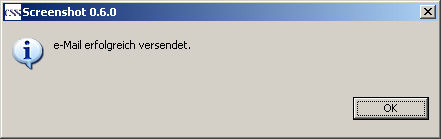

CSS Screenshot
Erste Schritte
Im Folgenden wird beschrieben, wie das Plugin aufgerufen wird, um ein Bild einzulesen, das dann als
e-Mail verschickt wird(am Beispiel von Probe).
WICHTIG:
Die Einstellungen für den Mail-Server müssen korrekt sein. Siehe hierzu Preferences.
1. Die View selektieren
Nur die View, die den Fokus hat, wird von dem Screenshot-Plugin erkannt und dargestellt.

2. Plugin starten
Das Screenshot-Plugin läßt sich über den Button in der Toolbar starten.

Wer möchte, kann auch den langen Pfad im Menü benutzen.

3. Darstellung des Screenshots
Das Plugin startet und erzeugt intern bis zu drei Bilder:
- Aktive View
- CSS-Fenster
- Der gesamte Bildschirm
Zwischen diesen Bildern kann man auswählen. Ist eine View aktiv, wird sie dargestellt, ansonsten wird das CSS-Fenster angezeigt.

In diesem Beispiel wird die View von Probe ordnungsgemäß dargestellt.
Ist das Bild zu groß, um komplett in die Screenshot-View zu passen, werden Scrollbalken angezeigt, mit denen man den Ausschnitt
verschieben kann.
4. Versenden per e-Mail
Die Screenshot-View hat eine eigene Toolbar. Dort findet sich auch ein Button, um das Bild als Anhang an einer e-Mail zu
versenden.

Ein Klick auf diesen Button öffnet den Mail-Dialog.

Fügen Sie die e-Mail-Adresse und den Mail-Text ein und klicken Sie anschließend auf den Button Versenden. Wurde die
Mail verschickt, erhalten Sie eine entsprechende Meldung.
